放射治療
流程與介紹
亞東紀念醫院 放射腫瘤科
了解您的治療計畫，安心面對每一次療程 🌿
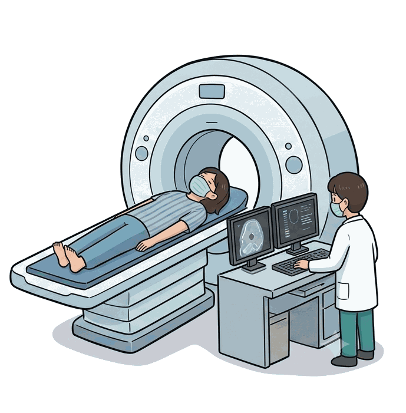
網頁製作: 莊玉瑄醫師
① 什麼是放射治療？
原理・目的・適應症
② 準備流程
定位・模具・等待通知
③ 療程介紹
標準・低分次・SBRT
④ 副作用
各部位・急性・慢性
⑤ 健保與自費
給付說明・費用比較
⑥ 營養補充、其他
院內建議產品一覽
放射治療 = 高能 X 光
照射腫瘤，殺死癌細胞
治療特色
- 不需麻醉・非侵入性
- 過程類似電腦斷層（CT）掃描
- 每次躺著照射約 10–20 分鐘
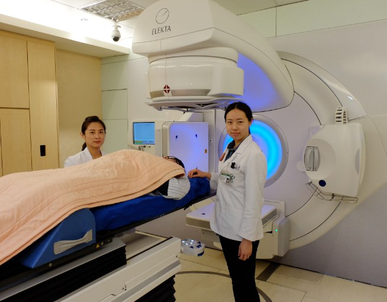
治療目的
🎯 根治性 Curative
- 術前縮小腫瘤
- 術後預防復發
- 合併化療增效
🩹 緩解性 Palliative
- 骨轉移止痛
- 腫瘤止血
- 減輕壓迫症狀，延緩疾病進展
適應症
幾乎所有固態腫瘤都可能接受放射治療，常見包括：
1–2 週｜治療前準備工作
從決定治療到第一次照射，需要時間設計專屬於您的個人放療計畫
Step 1 門診評估
- 放射腫瘤科醫師評估病情與分期
- 說明治療目標、方式、副作用與預期療效
- 解釋自費項目、護理師衛教
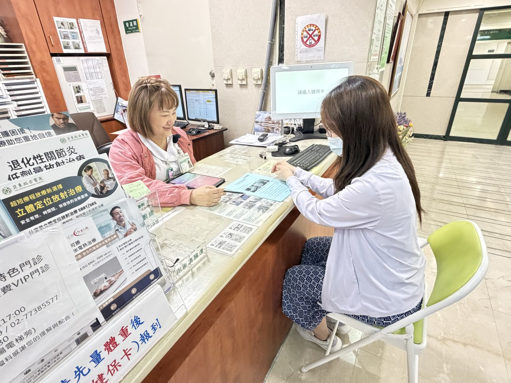
Step 2 定位掃描
- 依治療部位製作固定模具（頭頸面罩・固定身體的真空床）
- 進行定位 CT 掃描，確定每次治療的姿勢
- 放射師在體表畫上定位黑線作為對位基準
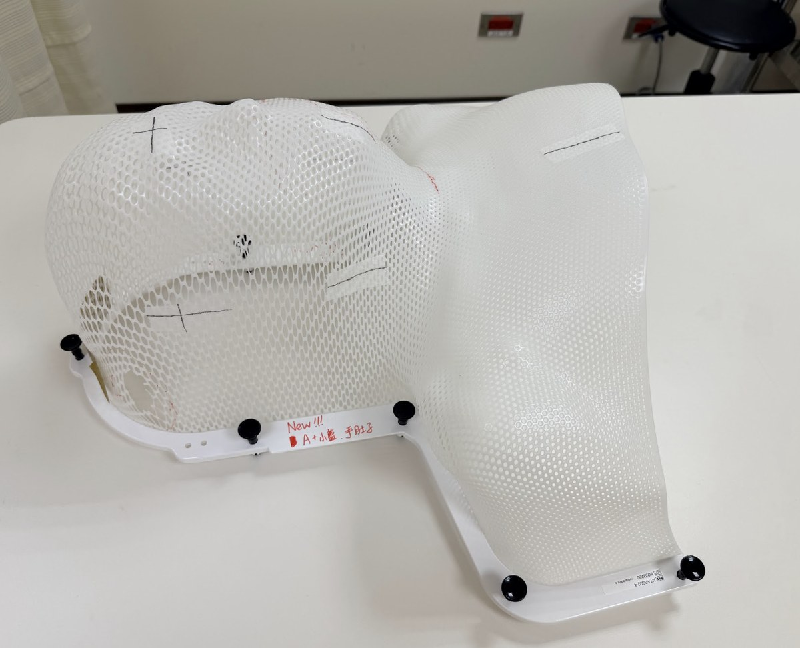
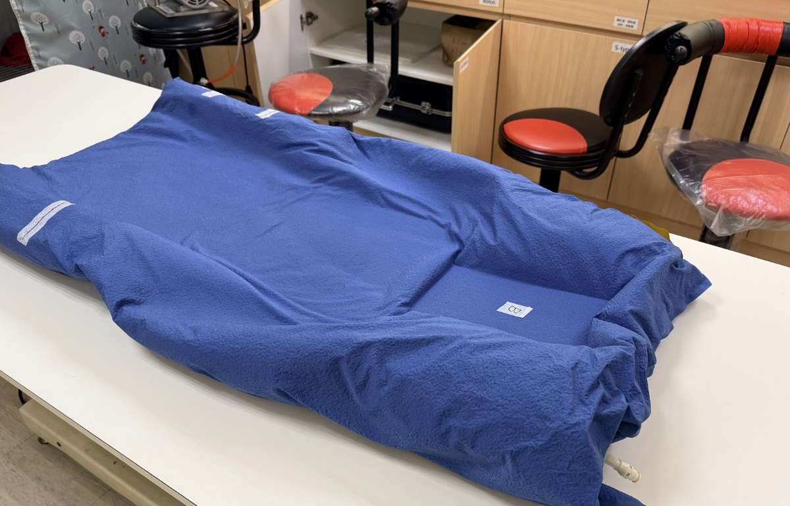
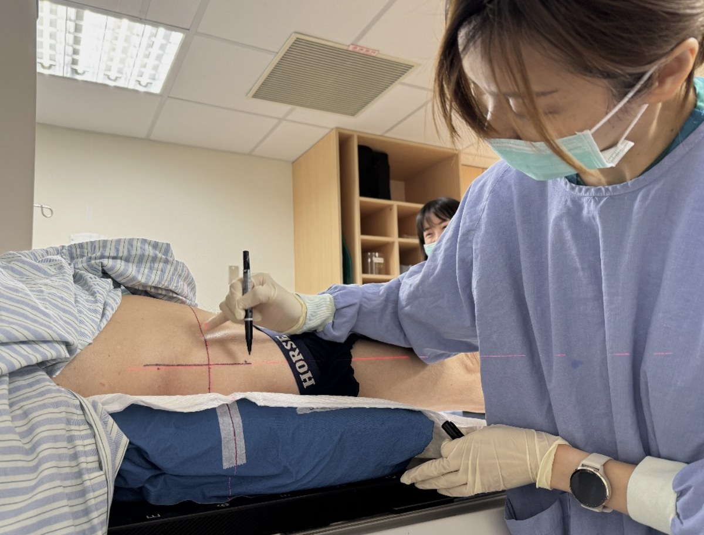
不小心洗掉請立即告知放射師，勿自行描繪喔！
Step 3 計畫設計
- 醫師和物理師共同設計照射計畫
- 確保腫瘤獲得足夠劑量，正常組織受到最大保護
- 計畫完成後，會有專人電話通知治療開始日期
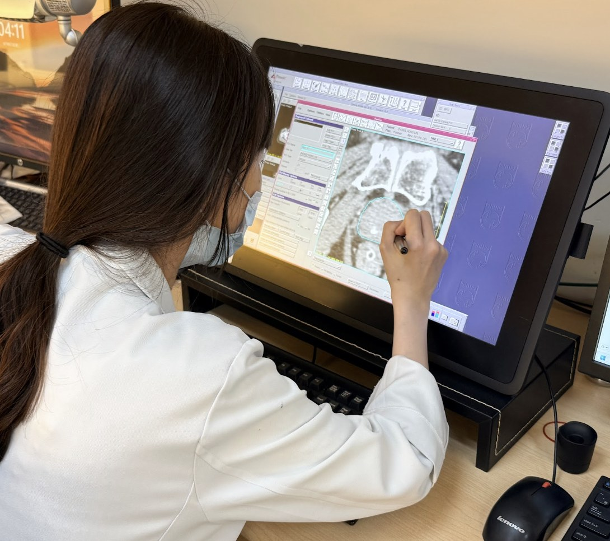
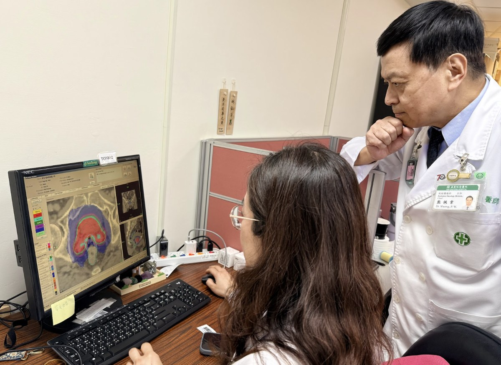
注意事項
莫急莫慌
對位重要依據
第一次治療開始前
請聯繫門診
每週 5 次｜週一至週五
每次照射約 10–20 分鐘，療程 3–8 週依病情決定
傳統療程
依治療目標分為兩類，點擊查看詳細內容
根治性療程
以消滅腫瘤為目標・常見癌症劑量
緩解性療程
以緩解症狀為目標・1–2 週完成
立體定位放射治療 SBRT / SABR✨ 精準特色治療
次數少・劑量高・精準定位
根治性療程｜常見癌症劑量
以消滅腫瘤為目標的完整療程
| 癌症 | 總劑量 | 次數 | 週數 |
|---|---|---|---|
| 攝護腺癌 | 78 Gy | 39 次 | 8 週 |
| 鼻咽癌 | 70 Gy | 35 次 | 7 週 |
| 食道癌 | 50.4 Gy | 28 次 | 5.5 週 |
| 膀胱癌 | 55 Gy | 20 次 | 4 週 |
| 早期乳癌（術後） | 42.25 Gy | 16 次 | 3 週 |
※ 實際劑量依個人病情由醫師決定
緩解性療程｜1–2 週完成
以緩解症狀、提升生活品質為目標
- 目的：緩解症狀為主，非根治
- 共約 5–10 次，1–2 週完成
- 常見：腦轉移、骨轉移
副作用因部位而異
多數為暫時性，治療結束後可逐漸恢復
⚠️ 立即返診
・吐血 或 劇烈胸痛（食道穿孔疑慮）
・發燒 38.5°C 以上合併發冷
・大出血
・嚴重呼吸困難
全身性副作用
多數為暫時性，治療結束後可逐漸恢復
全身性副作用
疲倦感
最常見，建議充足休息
血球降低
合併化療時較明顯
噁心／嘔吐
腹部照射時較常見
皮膚反應
類似曬傷，第 3 週開始出現，隨劑量累積加重
皮膚反應
類似曬傷，第 3 週開始出現，隨劑量累積加重
第 1–2 週
微紅、輕微搔癢
第 3–4 週
明顯泛紅・乾燥・色素沉著
嚴重情況（不一定會發生）
水泡・濕性脫皮
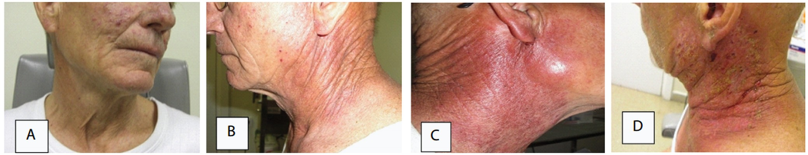
各部位副作用
依照射部位不同而異
各部位副作用
👤 頭頸部
- 口腔黏膜炎（口破）
- 口乾・味覺改變（1–3月）
- 皮膚反應・吞嚥困難
🫁 胸部
- 食道炎（吞嚥疼痛）
- 放射性肺炎
- 食道穿孔（罕見危險）
🫃 腹部
- 噁心・嘔吐
- 放射性肝炎
- 腹水（少見）
🦴 骨盆腔
- 腹瀉
- 頻尿・解尿疼痛
- 直腸炎
🦿 四肢
- 皮膚反應
- 水腫
🧠 腦部
- 掉髮
- 腦水腫
基本療程健保給付
進階影像導引技術可進一步提高治療精準度
影像導引技術比較
健保給付
對骨頭位置，無法看到內部結構變化
自費項目
可依解剖結構變化調整位置，觀察腫瘤是否縮小
融合不同影像，更精確鎖定腫瘤範圍
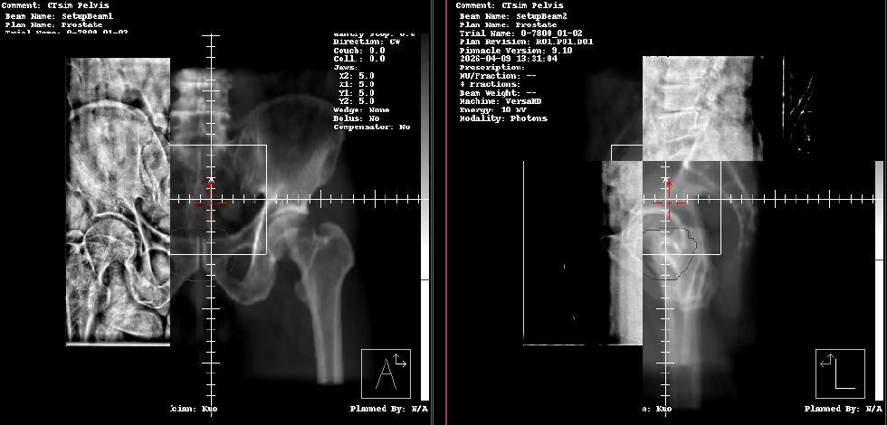
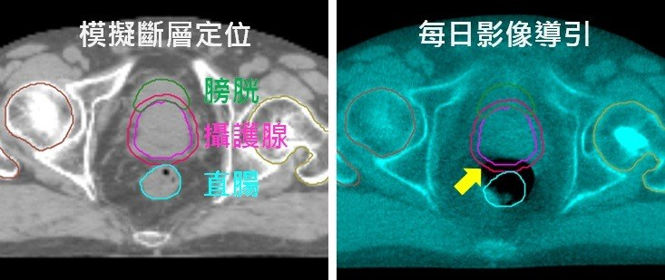
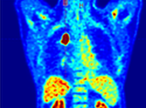
正子影像（PET）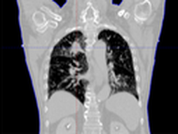
電腦斷層（CT）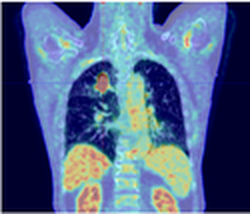
融合影像自費影像融合: 更精確辨識腫瘤範圍，保護周圍器官
Report of the AAPM Radiation Therapy Committee Task Group No. 132. Med. Phys., 2017
各癌症治療選項與費用
點擊查看各癌症的治療方式與費用比較
攝護腺癌
傳統・低分次・SBRT 三種選擇
乳癌
術後放射治療選項
骨轉移
傳統 vs 立體定位比較
攝護腺癌｜三種治療選擇
| 治療方式 | 劑量／次數 | 費用 |
|---|---|---|
| 傳統分次 | 78 Gy / 39 次（8週） | ✅ 健保 |
| 低分次 | 60 Gy / 20 次（4週） | ✅ 健保 ⚠️ 須搭配電腦斷層影像導引（15萬） |
| 超短療程 SBRT | 36.25 Gy / 5 次（1–2週） | ✅ 健保（中低風險，須事前申請） ⚠️ 高風險須自費立體定位放射治療（23萬） |
乳癌｜術後放射治療選項
| 治療方式 | 劑量／次數 | 費用 |
|---|---|---|
| 傳統分次 | 50 Gy / 25 次（5週） | ✅ 健保 |
| 低分次 | 40 Gy / 15 次（3週） | ✅ 健保（符合條件） |
| 超短療程 SBRT | 26 Gy / 5 次（1週） | ⚠️ 須自費立體定位放射治療（23萬） |
骨轉移｜傳統 vs 立體定位
| 治療類型 | 劑量 | 疼痛控制 | 1年局部控制 |
|---|---|---|---|
| 傳統分次 ✅ 健保 | 20–30 Gy / 5–10 次 | 60–70% | 60–70% |
| 立體定位 SBRT ⚠️ 須自費 95000 | 12–27 Gy / 1–3 次 | 80–90% | 85–95% |
吃得好，才能撐過療程
維持體重與肌肉量，是完成放射治療的重要基礎
飲食原則
- 均衡飲食：蛋白質（蛋・肉）＋蔬菜＋全穀類
- 低脂・清淡・不刺激，戒菸戒酒
- 每天飲水 1500–2000 mL
- 食慾不佳時補充特殊醫療配方
營養補充
實際使用請依醫師、營養師指示
營養補充
點擊圖片可放大 🔍（實際使用請依醫師、營養師指示）
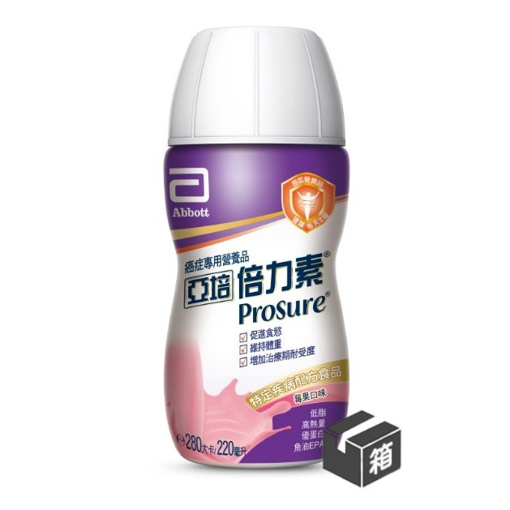
倍力素
高蛋白魚油・抗發炎，維持體重及肌肉（一天最多2瓶）
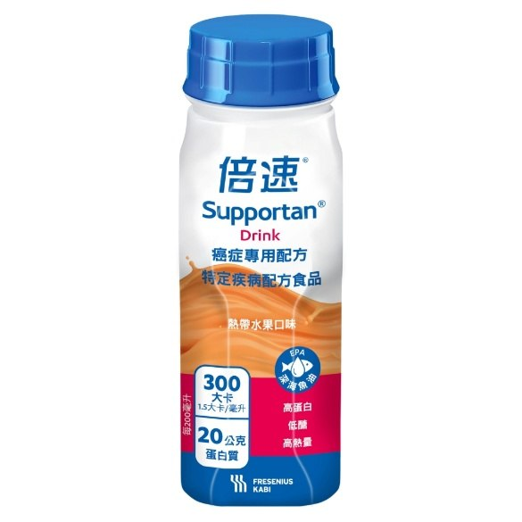
倍速
高蛋白魚油・抗發炎，維持體重及肌肉（一天最多2瓶）
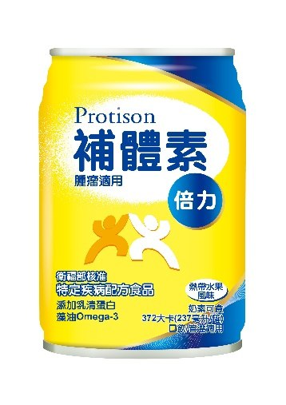
倍力補體素
高蛋白魚油・抗發炎（奶素可素食）
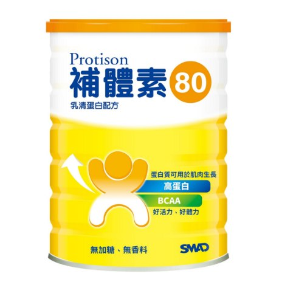
補體素 P80
高蛋白乳清蛋白，可用於肌肉生長組織修復
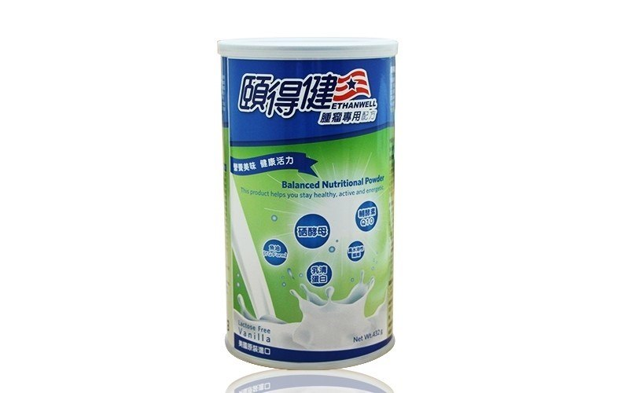
頤得健 Ethanimmu
乳清蛋白／增加肌肉
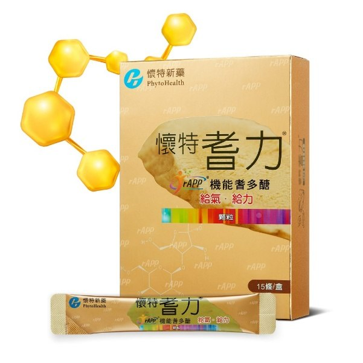
懷特耆力 Amazpower
調養機能・調整免疫・改善疲勞疲憊
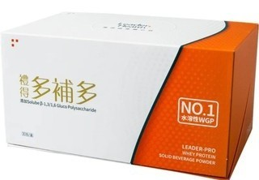
禮淂多補多 B-Glucan
黃金配方，支持免疫調節
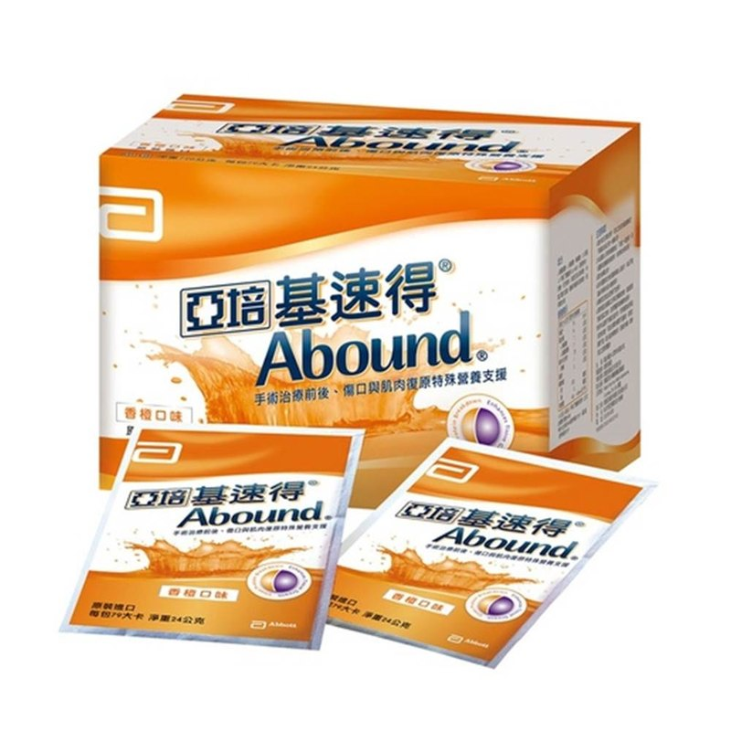
基速得
支援身體修復、加速各類傷口的癒合
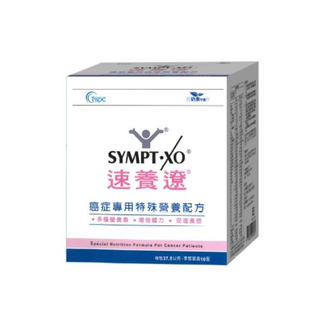
速養療
組織修復・減少腸胃不適
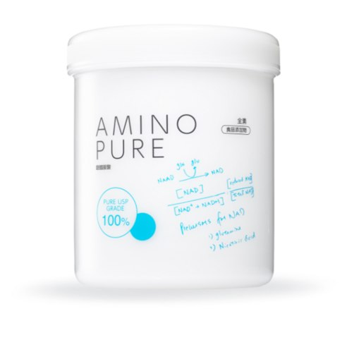
愛沛元氣素 Aminopure
腸道與黏膜修復
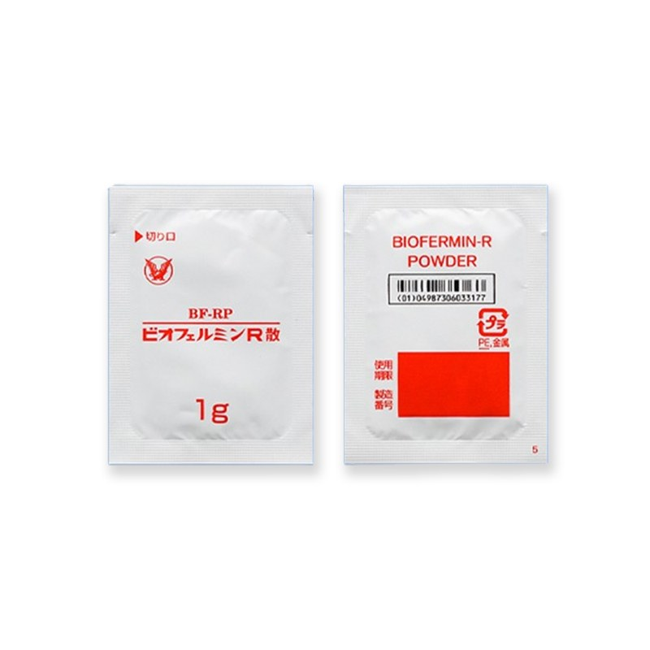
Biofermin-R
維持腸道菌叢
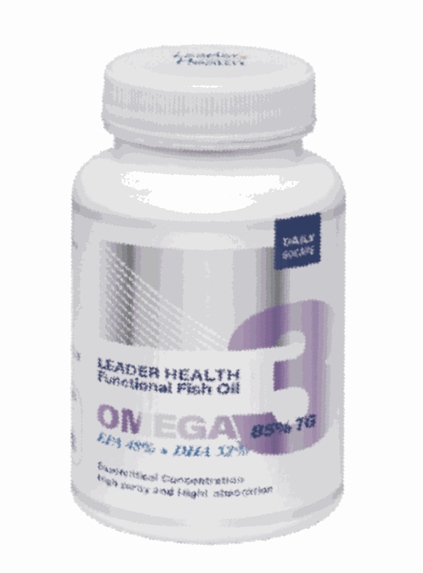
禮淂 Omega-3 85% TG魚油
抗發炎・支持心血管
皮膚敷料
依傷口狀況選擇，以醫師評估為準
皮膚敷料
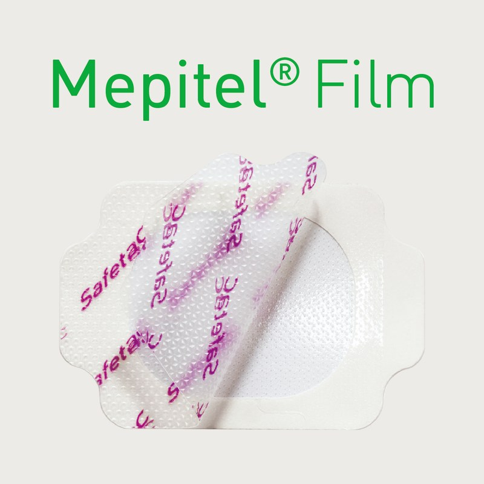
美尼克美皮通皮膚保護膜敷料
保護皮膚避免衣物磨擦；約 14 天再行更換
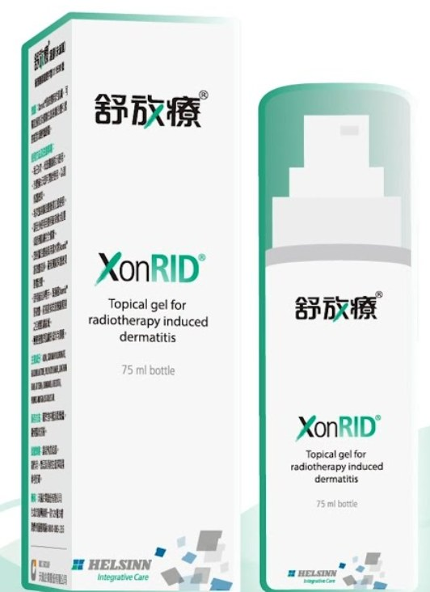
舒放療凝膠 75ml
玻尿酸成分，保濕照護
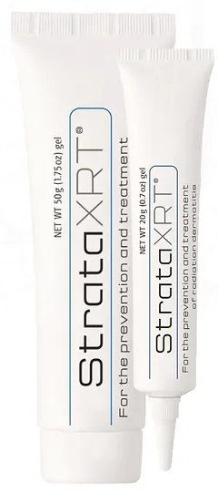
舒坦麗凝膠膚料（滅菌）20g
保護皮膚避免磨擦・抑菌；滅菌可用於有傷口皮膚
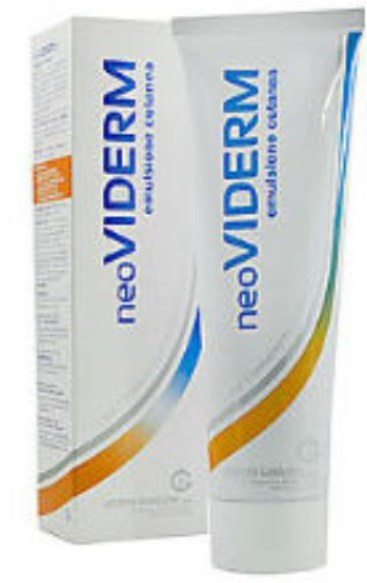
加納軟膏 100ml
Beta 葡聚醣、海藻酸鈉、玻尿酸，保濕照護修復
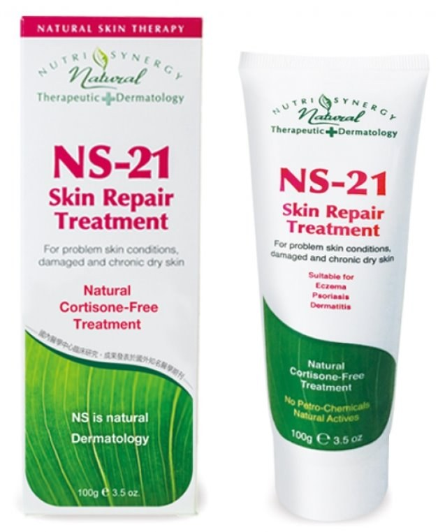
NS-21 肌膚修護霜 100g
尿素、尿囊素為皮膚添加天然保護膜，保濕照護修復
漱口水
口腔黏膜照護
漱口水
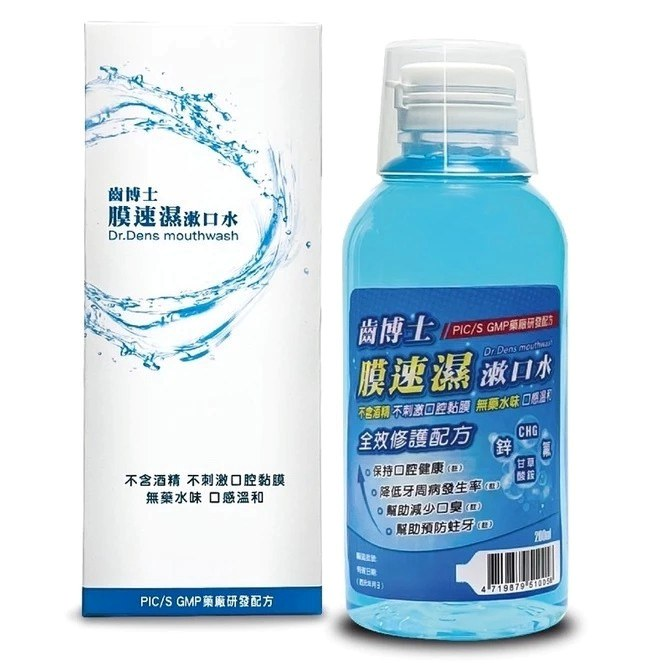
膜速濕漱口水
不含酒精・不刺激口腔黏膜
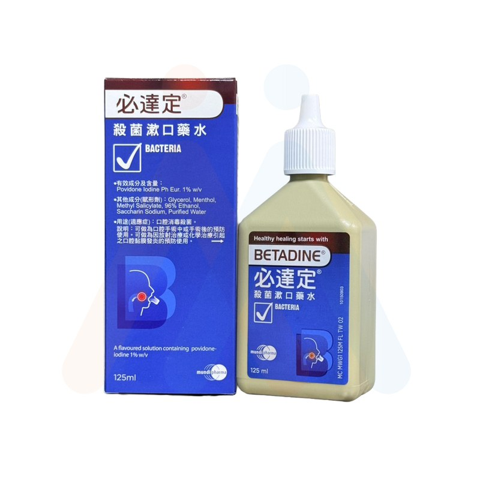
口腔保健漱口水
維持口腔清潔・舒緩不適
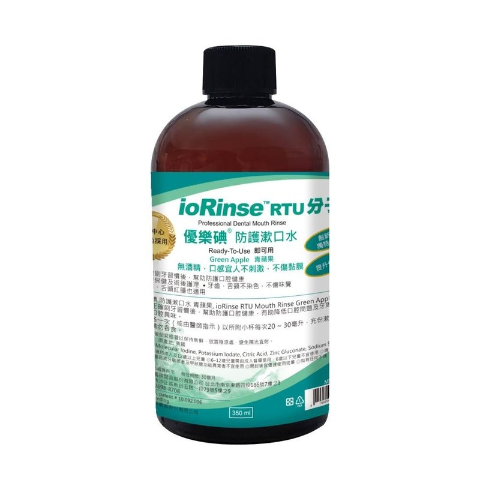
口腔修護漱口水
輔助口腔黏膜照護
口腔護理漱口水
治療期間口腔保健